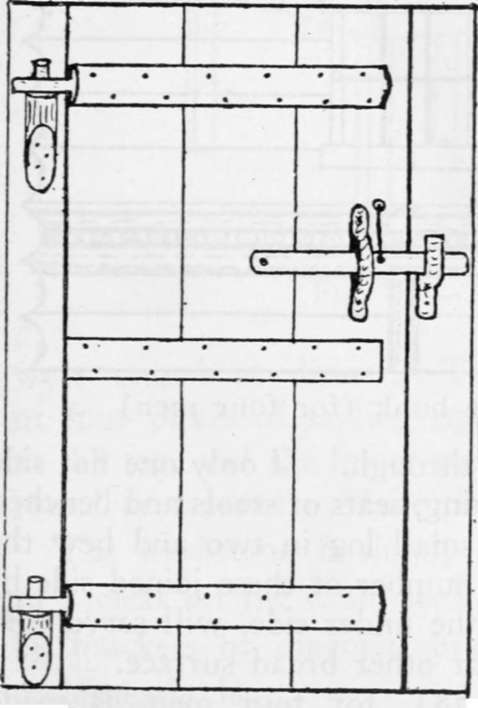

Cabin Building And Fitting Up. Part 4
Description
This section is from the book "Camping And Woodcraft", by Horace Kephart. Also available from Amazon: Camping and Woodcraft.
Cabin Building And Fitting Up. Part 4
Wherever there is limestone, enough lime for mortar can be made without much trouble, by a process similar to that of burning charcoal. Enclose a circular space of 5 feet diameter by a rude stone wall 3 feet high; cover the bottom of this enclosure with brush to facilitate kindling the kiln; then fill with alternate layers of dry hardwood and limestone broken into moderate-sized pieces, piling the top into conical form. Light the pile, and when it is well going, cover the top with sods to make the calcination slow and regular. Keep it going for two days and nights. Lime can also be made from mussel shells or oyster shells. Slake the lime in a box some days before it is to be used, and cover with sand.
For mortar, work the lime into a paste with water and mix in with this, thoroughly, from 2j/2 to 3 parts of sand. Thin with water until it mixes easily.
A pretty good substitute for mortar is blue clay (yellow will do) mixed intimately with wet sand. Another is a mixture of sand, salt, and wood ashes.
When laying a chimney or wall, see that no joint comes over or close to another joint. If a rock does not fit, turn it over and try again.
At the proper height in your fireplace (a little below level of lintels) insert a stout steel rod horizontally on which to hang wire pot-hooks when cooking. In place of andirons, select two rocks about 15 x 5 x 5 inches, to support the "fire irons" for frying-pan, etc. (See Vol. I, p. 64.) Never lay backlogs on them: they are only to be used when cooking, or to hold forestick in place.
Chinking
If there are large crevices between the logs they should be filled with quartered poles. Small ones are caulked with moss or clay. Mortar should never be used for this purpose until the logs have seasoned thoroughly and got their "set".
Fittings
In Fig. 69, a pair of pole bunks are shown (d, d) across the end of the room opposite the fireplace, where they are least in the way. They are to be built high enough to store personal chests under. A high window at c lets in the morning light. Each bunk is roomy enough for two pe^ sons.
The table (e) is movable. The provision chest (/) may be lined with zinc to keep out rodents, ah though wire screen cloth is effective and easier to apply. It serves as a bin for flour, potatoes, etc. Over it hangs a cupboard for dishes and minor foodstuffs.
Dotted lines show high shelves around three sides of the room. At g is a stand for water pail and basin, with towel and mirror above and slop pail underneath. Dry wood is piled in the corner between this«and the fireplace. A broom is hung behind the door. Chairs or stools go where most convenient at the time.
Axeman's Cabin
It is quite practicable to build a «mall cabin with no other tool than the axe, and out of no other materials than such as grow on or around the site. This often is done in remote forests where there is no road. In such case the shack is no larger than actually necessary—say 8 x 10 feet, or at most 10 x 12.
The roof may be of bark (see Chapters XII and XIII) held down by weight-poles running from ridge to eaves and tied together in pairs at the top to keep them from slipping down. However, a bark roof is flimsy. A much better arrangement is to •'carry in" a ready-made paulin of 12-oz. canvas, which can be bought of a tent maker or a mail order house, a can of paint, and a brush (or the paulin may be waterproofed before starting—see Vol. I., p. 72), and tack this to the rafters. Thus a durable and perfectly reliable roof is quickly made.
These small shacks are best heated by a folding stove of sheet iron, which can be carried in on a man's back. Take along, also, a collar for the pipe.
When there are only one or two men to do the work, the house may have to be built of poles. In such case I prefer a shed-roof construction, as it takes less material and is easier erected than one with a ridge. But if there are trees that split easily, it is better to build of logs split through the center. These half-logs are easy to handle, easy to notch and lock at the corners, make close joints and require little chinking; besides, since the walls are flat inside, there is less waste of space and material.
It is not necessary to floor such a shack. Some use poles for the purpose ; but a pole floor is hard to keep clean and offers harborage for vermin. A hard-trodden earthen floor is easy to sweep and can be kept quite neat. It is warmer than an ill-fitting one of boards or puncheons.
The door can be made of boards riven with axe and wooden wedges, with wooden hinges and latch,, as in Fig. 77. The hinge pins are made of cuts from a sapling, slightly flattened on the inner side and with tops whittled to fit holes in flattened ends of top and bottom door battens, which are half-round. The latch guard and catch are of naturally bent branches or roots, or may be whittled out. The end of latch string that hangs outside is knotted so it cannot pull through the hole.
Fig. 77. Cabin door (wooden hinges and latch).
Cabin windows, when glass is unobtainable, may be made of translucent parchment (recipes in Chapter XVII), but it is better to carry in with the outfit a sheet or two of transparent celluloid, such as is employed for automobile curtain windows. Lacking all such materials, cut out a window space, anyway, that can be left open in fair weather and closed with split boards at other times.
Rustic Furniture
Boards riven like clapboards from green timber are likely to warp ii? seasoning unless stacked carefully, or held in forms until they have dried through. If only one flat side is required, as in shelving, seats of stools and benches and so forth, split a small log in two and hew the flat side smooth. A number of these joined side by side, and cleated on the under side, will serve very well for a table top or other broad surface.
Continue to:
- prev: Cabin Building And Fitting Up. Part 3
- Table of Contents
- next: Cabin Building And Fitting Up. Part 5